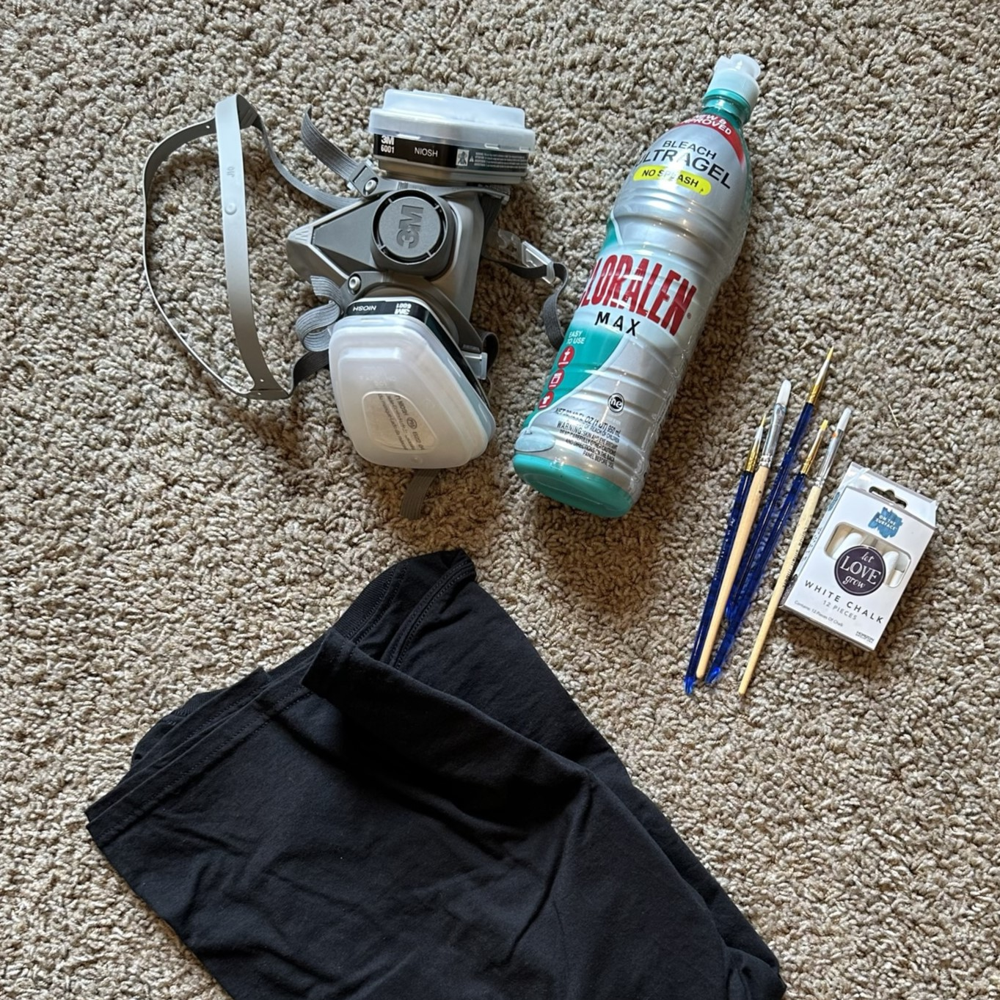

In 2022, I tried working with a new medium—bleach. Using only chalk to sketch my designs, a paintbrush, and a t-shirt, I created some of my favorite pieces.
When you paint with bleach, it takes a couple seconds to develop. You're essentially working blindly as you create your piece. This is what makes the end result so fascinating.
After making a couple shirts, I decided to open my own Etsy shop. I enjoy sharing my art on there. Below you can see how the process works, along with my Etsy!